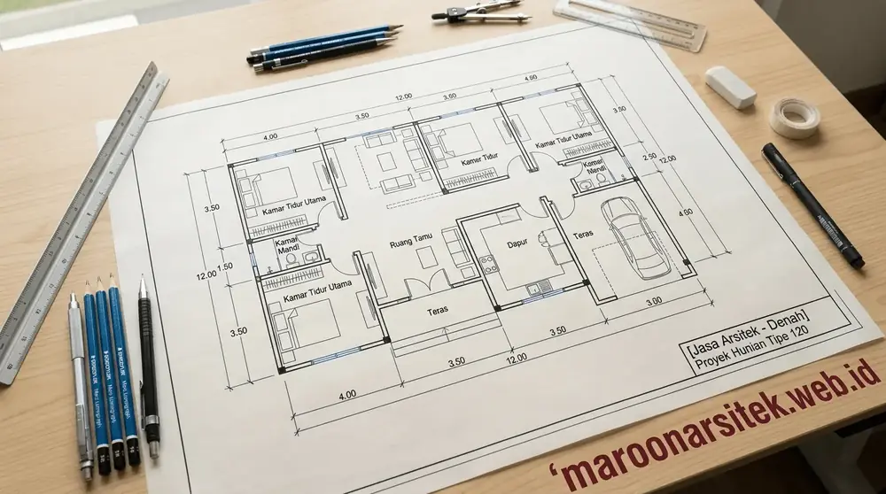
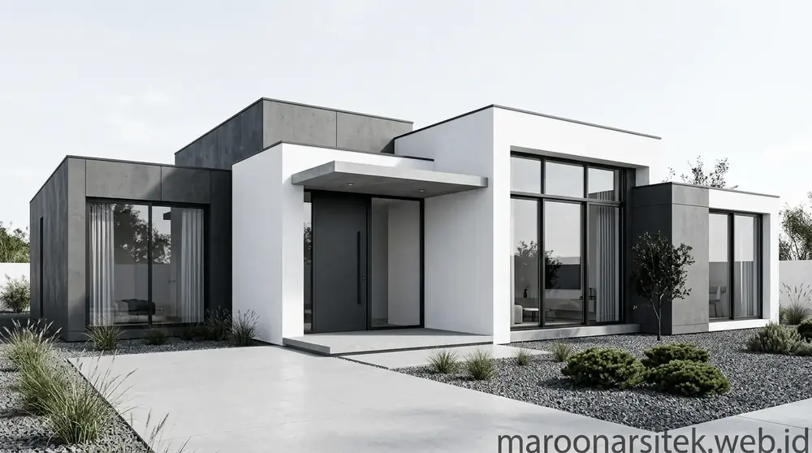
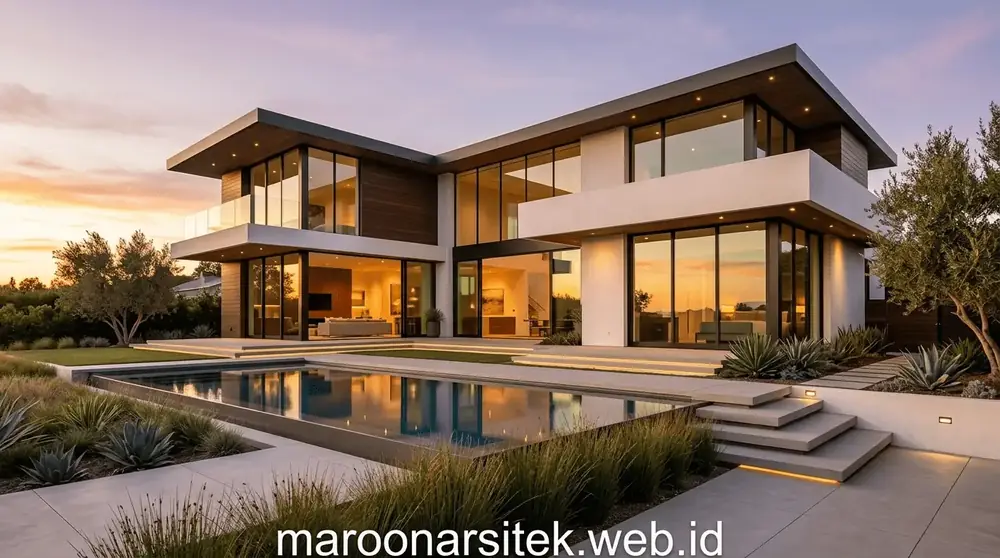
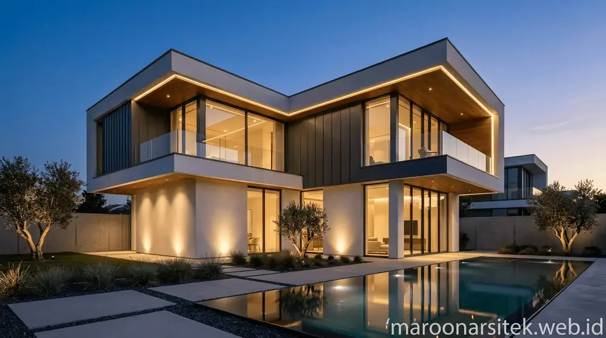

Desain Arsitektur yang Estetis & Fungsional
Di Maroon Arsitek, kami tidak sekadar menggambar bangunan, melainkan merancang ruang hidup yang mencerminkan karakter, gaya hidup, dan kebutuhan spesifik Anda. Setiap konsep diperhitungkan dengan matang dari aspek sirkulasi udara, pencahayaan alami, kekuatan struktur, hingga efisiensi anggaran pembangunan.

Output Layanan Jasa Arsitek
Setiap paket perancangan arsitektur dilengkapi berkas gambar dan dokumen terlengkap untuk memudahkan pelaksanaan konstruksi di lapangan.
1. Konsep & Denah 2D
Penataan tata letak ruang, denah tiap lantai, zoning sirkulasi, serta ukuran detail sesuai kebutuhan fungsi dan luas lahan.
2. Visual 3D Photorealistic
Render 3D eksterior dan fasad fotorealistik dari berbagai sudut (eye level, bird eye, suasana siang & malam).
3. Gambar Kerja Teknis (DED)
Gambar arsitektur (tampak, potongan, pintu/jendela), gambar struktur pondasi/kolom/balok, dan instalasi listrik/plumbing.
4. Rencana Anggaran Biaya (RAB)
Rincian volume pekerjaan, spesifikasi material bangunan, dan estimasi biaya konstruksi agar anggaran terkendali.
5. Berkas Izin PBG / IMB
Format gambar teknis telah disesuaikan dengan syarat pengajuan Persetujuan Bangunan Gedung (PBG) resmi daerah.
6. Pengawasan Berkala Arsitek
Pendampingan teknis dan konsultasi berkala saat masa konstruksi untuk memastikan realisasi 100% presisi sesuai desain.
Inspirasi Desain Arsitektur Kami



Konsultasikan Konsep Rumah Impian Anda Sekarang
Diskusikan luas lahan, kebutuhan denah, gaya arsitektur, dan anggaran Anda bersama tim arsitek kami. Gratis konsultasi awal.